Data engineering: simple and complex data pipelines
Most of my previous work consisted of various data analysis and ML-related tasks.
As of recently, I have been working on tasks related to data engineering, so I have decided to learn more about it. I have stumbled upon Chris Riccomini’s talk @QConSanFrancisco and have learned quite a few terminologies and concepts.
In this blog I would like to summarize the key points from Chris’ talk.
All credits go to Chris Riccomini (Link to the talk, Linkedin, Twitter).
What is the role of a data engineer?
- Data engineer’s job is to help an organization move (streaming or data pipelines) and process (data warehouses (DWH)) data.
Data engineers build tools, infrastructure, frameworks and services.
Data engineering is much closer to software engineering than it is to a data science.
- “The rise of the data engineer”, Maxime Beauchemin, Preset.
Data engineers are primarily involved with building data pipelines.
There are 6 stages in an organization’s data pipeline:
1. None
2. Batch
3. Realtime
4. Integration
5. Automation
6. Decentralization
1. None (Monolith DB)
Structure:
1. Single large DB
2. Users access the same DB
Pros/cons:
- Pros:
- Simple
- Cons:
- Queries time out
- Users impact each other
- MySQL doesn’t have complex SQL functions
- Report generation are broken
- Queries time out
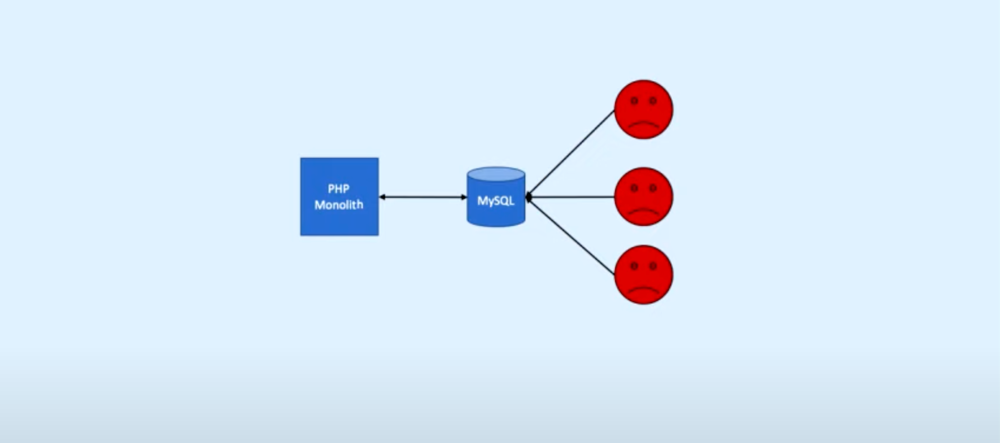
2. Batch (DWH + Scheduler)
Structure:
1. In-between the user and the DB we put a DWH
2. To get data from the DB to the DWH, we put a scheduler to periodically suck the data in.
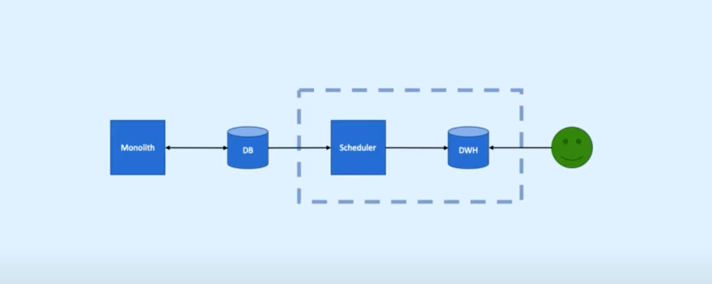
Pros/cons:
- Pros:
- setup is quick
- best for a basic setup
- setup is quick
- Cons:
- Large number of Airflow jobs are difficult to maintain
- create_time, modify_time issues arise
- DB Admin’s operations impact the pipeline
- Hard deletes don’t propagate
- MySQL replication latency (the amount of time it takes for a transaction that occurs in the primary database to be applied to the replicate database) causes data quality issues
- Periodic loads cause occasional MySQL timeouts
- Large number of Airflow jobs are difficult to maintain
Transition to Realtime if:
1. Loads are taking too long
2. Pipelines are no longer stable
3. Many complicated workflows
4. Data latency (the time it takes for data to travel from one place to another) is becoming issue
5. Data engineering is your full-time job
6. Your organization uses Apache Kafka (stream processing tool that provides a unified, high-throughput, low-latency platform for handling real-time data feeds.)
3. Realtime (Kafka)
Structure:
1. Change Airflow to Debezium (Tool for change data capture. Start it up, point it at your data sources, and your apps can start responding to all of the inserts, updates, and deletes that other apps commit to your databases.)
Change Data Capture is github for DB changes.
Debezium data sources: MongoDB, MySQL, PostgreSQL, SQL Server, Oracle, Cassandra
2. Operational complexity has gone up
3. KCBQ - Kafka Connects to BigQuery (takes data from Kafka and uploads it into BigQuery)
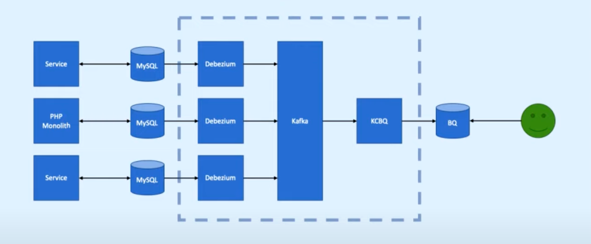
Transition to Integration if:
1. You have many microservices
2. You have a diverse DB ecosystem
3. You have a team of data engineers
4. You have a mature SRE organization (SRE teams use software as a tool to manage systems, solve problems, and automate operations tasks)
4. Integration (Advanced topic)
Structure:
1. Services with DB
2. Streaming platform (Kafka) and DWH
3. Different types of DBs (NoSQL, NewSQL, GraphDB…)
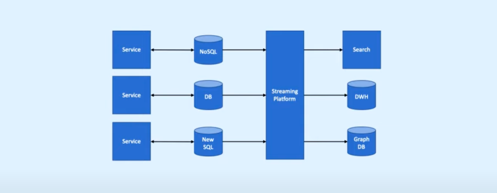
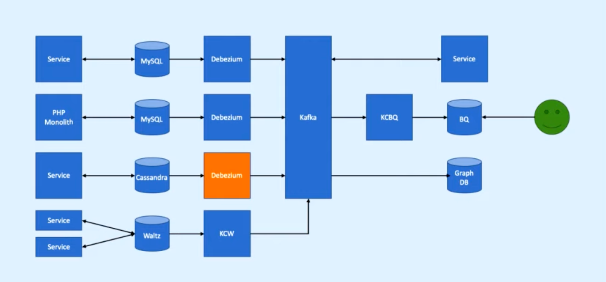
Why do we need such a complex pipeline?
Metcalfe’s law states that the value of a telecommunications network is proportional to the square of the number of connected users of the system (the value of a network increases with more nodes and edges you add into it).
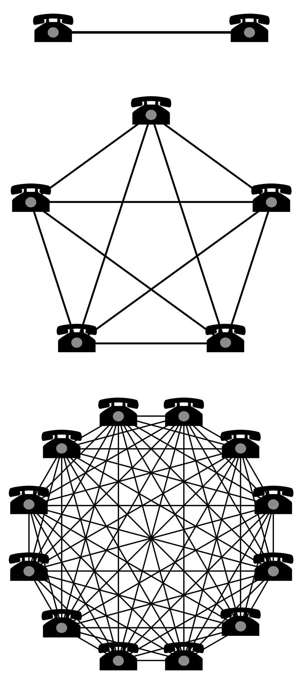
Pros/cons:
- Pros:
- If you would like to test a new realtime system, it becomes relatively easy to do so. –> Because your data is very portable.
- Easy to switch Cloud vendors
- Improves infrastructure agility. Easy to plug-in a new system, feed with data and test it.
- If you would like to test a new realtime system, it becomes relatively easy to do so. –> Because your data is very portable.
- Cons:
- Add/create/configure/grant/deploy manual work persists!
- Manual work eats up time…
- Add/create/configure/grant/deploy manual work persists!
Transition to Automation if:
1. Your SREs can’t keep up
2. Manual work is taking a lot of time
5. Automation
Structure:
1. Automated Data Management added
2. Automated Operations added
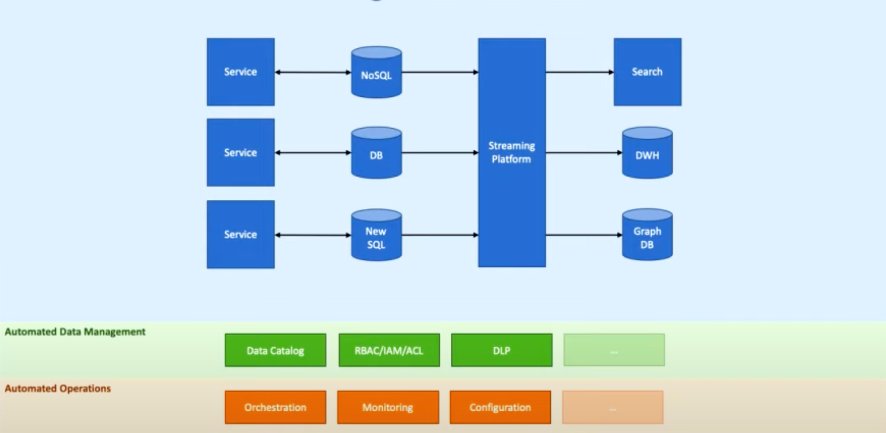
a) Automated Data Management
Automation helps with data management:
1. Who gets access to the data once it is loaded ?
2. How long can the data exist (persist only 3 years –> removed)?
3. Is this data allowed in this system (sensitive information)?
4. Which geographies must the data persist in?
5. Should columns be masked, redacted?
One of the most redundant tasks of data management is creating data catalogs.
Contents of a data catalog:
- Location of the data
- Data schema information
- Who owns the data
- Lineage (where the data came from)
- Encryption information (which parts of the data are masked, encrypted)
- Versioning information
Example data catalog by Lyft’s Amundsen tool:
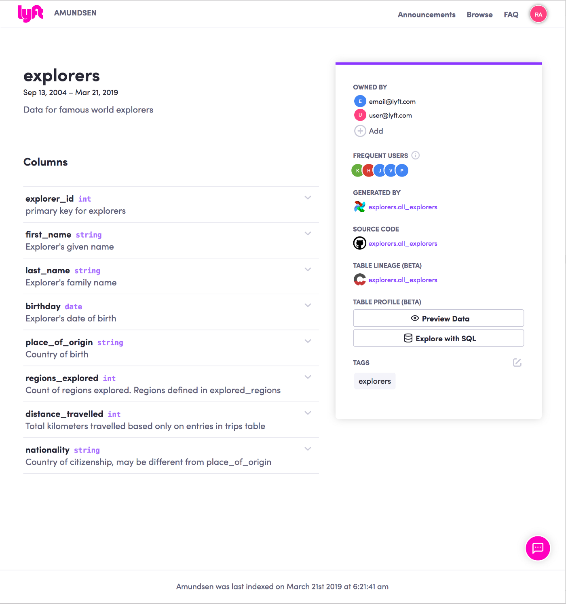
The key point here is that we don’t want to manually input data into the data catalog.
Instead, we should be hooking up our systems to different data catalog generators since they can automatically generate the metadata (schema, ownership, evolution, etc.).
b) Automated Operations:
User management automations:
1. New user access
2. New data access
3. Service account access
4. Temporary access
5. Unused access
Detecting violations via automations:
1. Auditing
2. Data loss prevention (GCP Data Loss Prevention (DLP))
For example, we can run DLP checks to detect whether sensitive information (phone number, SSN, email, etc.) exists in the data or not. This protects us from violating regulations.
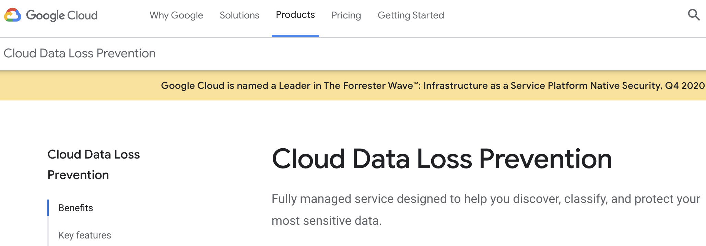
Even after automating all of the above, data engineers still have to configure and deploy.
Transition to Decentralization if:
1. You have a fully automated realtime data pipeline
2. People still ask the data engineers to load some data
6. Decentralization
Structure:
1. Multiple DWHs
2. Different groups administer and manage their own DWH
3. From monolith to micro-warehouses
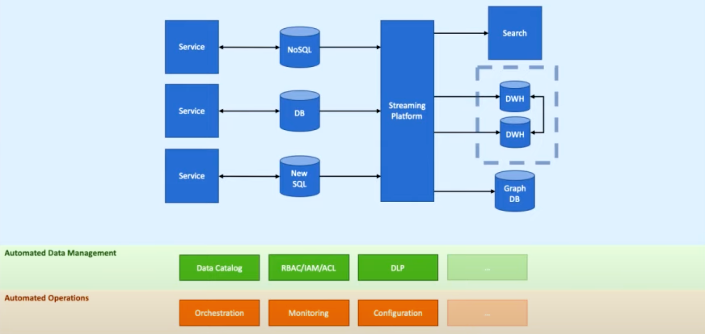
What is likely to be considered a full data pipeline Decentralization?
1. Polished tools are exposed to everyone
2. Security and compliance manage the access and policies
3. Data engineers manage data tools and infrastructure
4. Everyone manages data pipelines and DWHs
Conclusion:
Modern Data Pipeline structures by Chris Riccomini:
1. Realtime data integration
2. Streaming platforms
3. Automated data management
4. Automated operations
5. Decentralized DWHs and pipelines
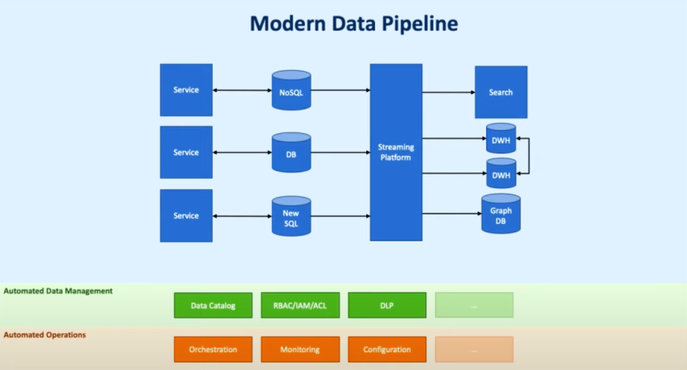
As a final remark, I would like to say that I truly enjoyed Chris’ speech.
It made me truly appreciate all the hard work put by data engineers, not mentioning the complexity of bits and pieces.
For anyone who is reading this post, I highly recommend to go and watch Chris’ talk.
Cheers and stay safe!